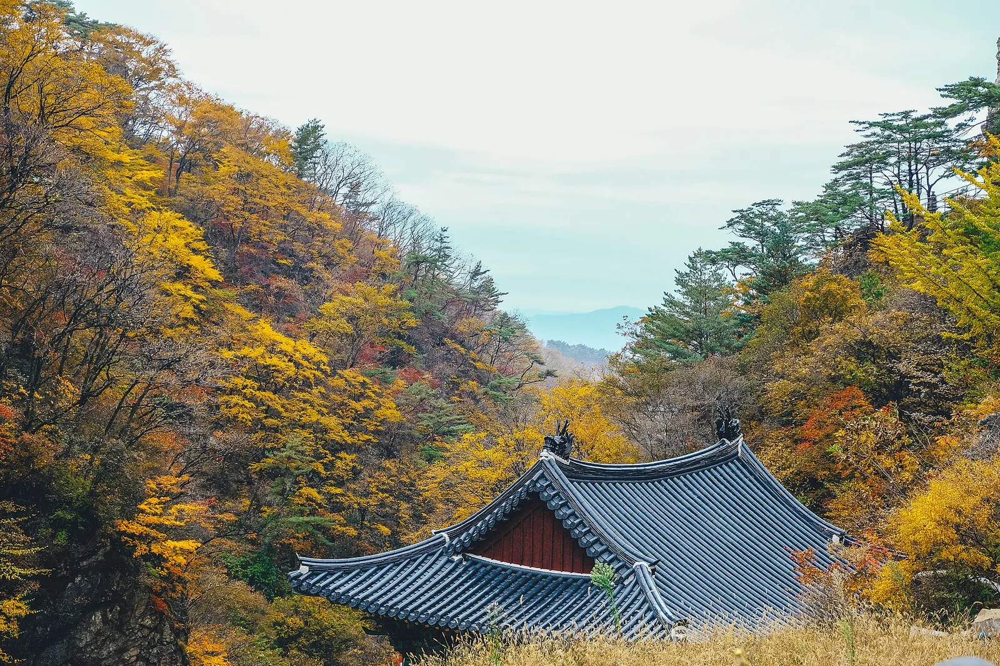
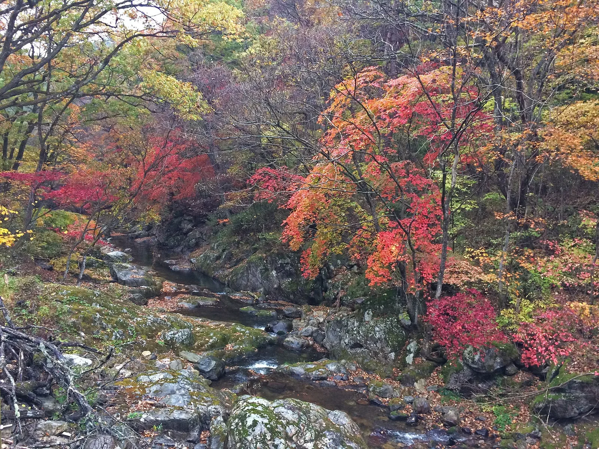
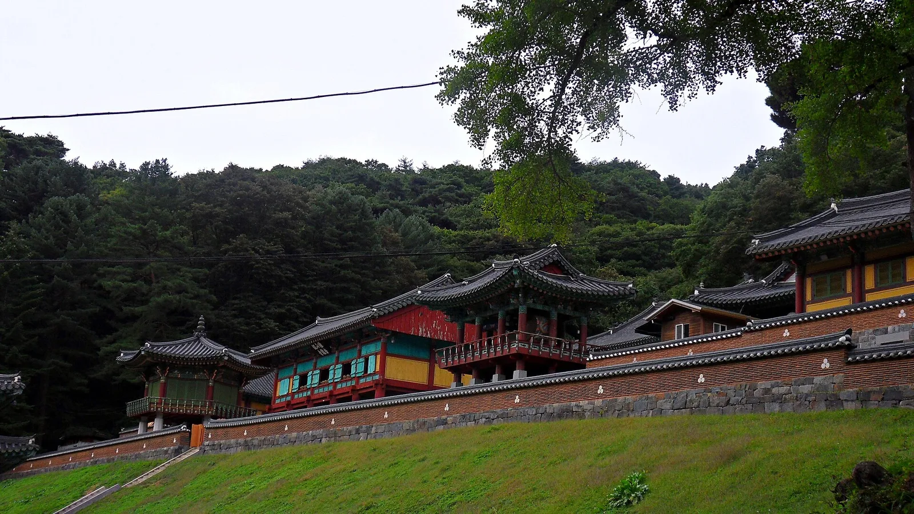
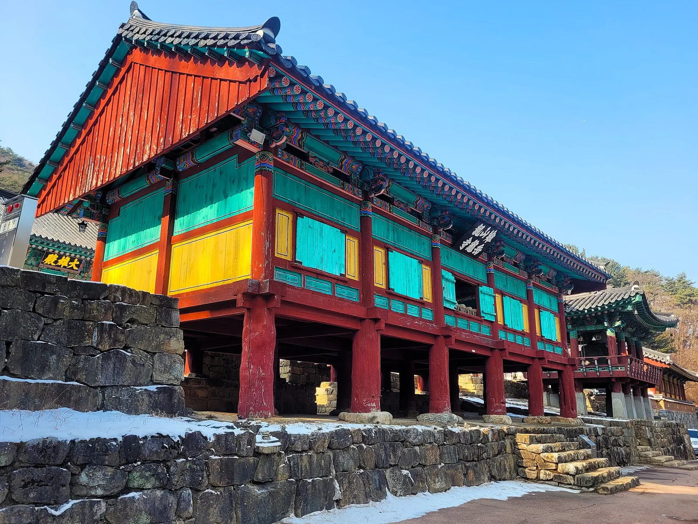
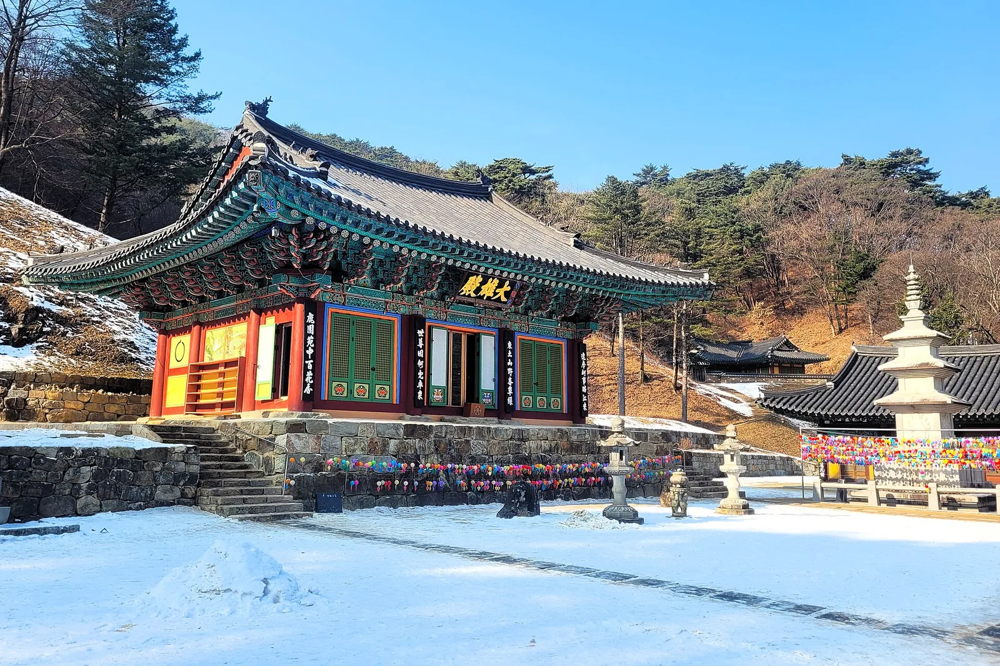
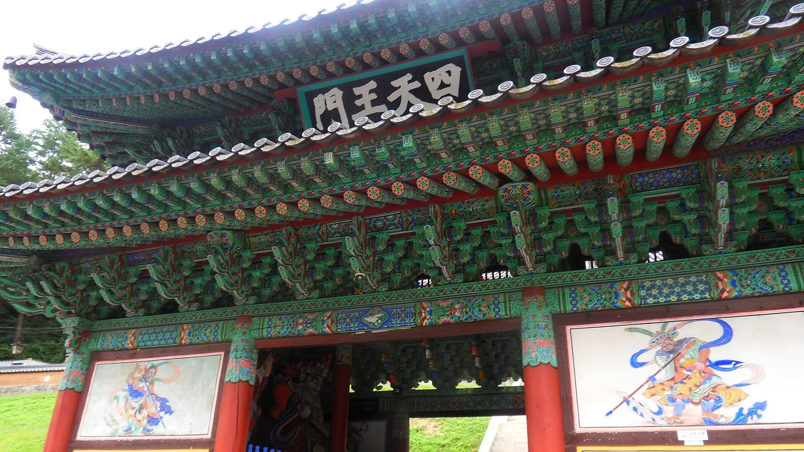
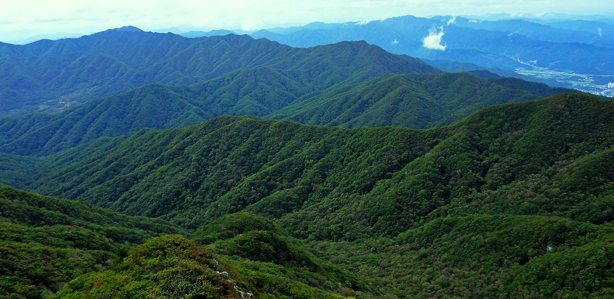
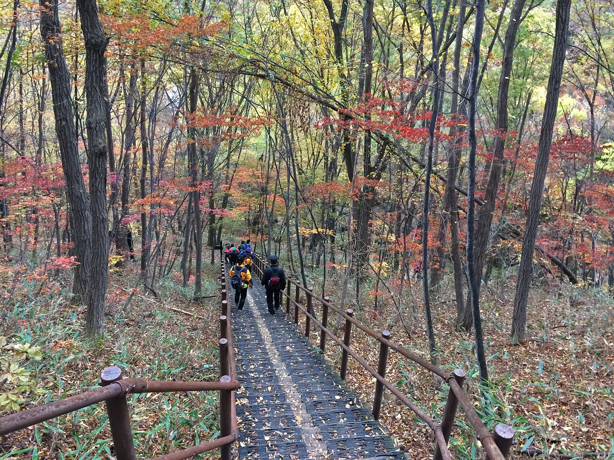

▲ 치악산 구룡사 계곡길의 가을 풍경. 단풍이 절정에 이르면 사찰 전각 지붕이 붉은 숲 사이로 드러난다 ⓒ Wikimedia Commons
강원 원주와 횡성·영월에 걸친 치악산은 1984년 국내 16번째 국립공원으로 지정됐으며 면적은 175.668㎢, 최고봉 비로봉은 해발 1,288m에 이른다. '가을 단풍이 아름다워 붉을 치(雉)를 쓴 산'이라는 이야기가 전해질 만큼 단풍철 풍경이 유명하다. 특히 구룡사 입구부터 계곡을 따라 이어지는 전나무숲길과 단풍길은 원주를 대표하는 가을 산책 코스로 꼽힌다.
1. 구룡사 단풍길 — 계곡을 따라 이어지는 원주 대표 가을 산책로
치악산 구룡사지구 매표소에서 구룡사까지 이어지는 약 1km 구간은 전나무와 단풍나무가 계곡을 따라 빽빽하게 늘어서 있다. 완만한 흙길이라 등산을 하지 않아도 가볍게 걸을 수 있어, 단풍철이면 가족 단위 방문객이 특히 많이 찾는다.

▲ 구룡사 계곡 단풍. 붉은색과 주황색 단풍이 바위 계곡과 어우러지는 구간이 많다 ⓒ Wikimedia Commons
구룡사 단풍길은 예년 기준 10월 중순~하순 절정을 이루며, 다른 국립공원보다 다소 이른 시점에 물들기 시작하는 편이다.
2. 구룡사 — 신라시대 창건된 원주의 천년 고찰

▲ 치악산 구룡사 경내. 대한불교조계종 제4교구 본사 월정사의 말사로, 신라시대 창건된 것으로 전해진다 ⓒ Wikimedia Commons
구룡사는 신라 문무왕 8년(668년) 의상대사가 창건한 것으로 전하는 사찰로, 원래 절터가 아홉 마리 용이 살던 연못이었다는 설화에서 이름이 유래했다고 전해진다. 창건 당시에는 '아홉 구(九)'자를 쓴 구룡사(九龍寺)였으나 조선 중기 이후 절 어귀 바위가 거북 모양이라는 풍수설에 따라 '거북 구(龜)'자로 바꿔 오늘의 이름이 됐다는 설도 함께 전해진다. 경내에는 보광루, 대웅전, 사천왕문 등 전각이 계곡을 따라 배치돼 있다.

▲ 구룡사 보광루. 계곡 위에 세워진 2층 누각으로, 아래층 통로를 지나야 대웅전으로 오를 수 있다 ⓒ Wikimedia Commons

▲ 구룡사 대웅전과 오층석탑. 경내 곳곳에 형형색색의 연등이 걸려 있다 ⓒ Wikimedia Commons

▲ 구룡사 사천왕문. 사찰 경내로 들어서기 전 마지막 관문으로, 사천왕 벽화가 문 양쪽에 그려져 있다 ⓒ Wikimedia Commons
2023년 국가지정문화재 관람료 폐지 정책에 따라 구룡사 경내 관람료도 무료로 전환됐다.
3. 비로봉 — 사다리병창을 넘어야 만나는 치악산 최고봉
비로봉은 해발 1,288m로 치악산 최고봉이다. 구룡사에서 세렴폭포를 지나 정상으로 오르는 코스는 '사다리병창'이라 불리는 가파른 암릉 구간을 포함하고 있어 국립공원 내에서도 체력 소모가 큰 코스로 꼽힌다. 그만큼 정상에서의 조망은 각별해, 맑은 날에는 원주 시가지와 치악산 주능선이 한눈에 펼쳐진다.

▲ 비로봉 정상에서 바라본 치악산 주능선. 겹겹이 이어지는 산줄기 너머로 원주 시가지 자락이 아스라이 보인다 ⓒ Wikimedia Commons
| 코스 | 구간 | 거리(편도) | 소요시간(왕복) | 난이도 |
|---|---|---|---|---|
| 구룡사~사다리병창 코스 | 구룡사 - 세렴폭포 - 사다리병창 - 비로봉 | 약 6.5km | 8~9시간 | 최상 |
| 구룡사 단풍길(단축) | 구룡사매표소 - 구룡사(왕복) | 약 1km | 1시간 안팎 | 하 |
| 세렴폭포 코스 | 구룡사매표소 - 세렴폭포(왕복) | 약 2.7km | 2~3시간 | 중 |
비로봉 정상까지 왕복하려면 이른 아침 출발이 필수이며, 사다리병창 구간은 우천 시 미끄럽기 때문에 등산화와 스틱 등 장비를 갖추는 것이 좋다.
4. 교통·주차·개방시간 정보

▲ 치악산 등산로의 목재 계단 구간. 단풍철 주말에는 탐방객이 몰려 계단 구간이 혼잡할 수 있다 ⓒ Wikimedia Commons
| 항목 | 내용 |
|---|---|
| 국립공원 지정 | 1984년(국내 16번째 국립공원) |
| 면적 | 약 175.668㎢(원주·횡성·영월) |
| 최고봉 | 비로봉 1,288m |
| 주요 탐방기점 | 구룡사지구(원주), 성남지구·금대지구(원주) |
| 입장료 | 무료(국립공원 입장료 전면 폐지, 구룡사 관람료도 무료) |
| 주차 | 구룡사지구 공영주차장 이용, 단풍철 주말 혼잡 |
구룡사지구는 원주 시내에서 차량으로 약 20분 거리이며, 영동고속도로 신림IC 또는 남원주IC를 이용하면 접근이 편리하다.
5. 치악산 구룡사 단풍길·비로봉, 가기 전 체크리스트
✅ 치악산 가기 전 체크리스트
· 1984년 국내 16번째 국립공원 지정, 면적 175.668㎢, 최고봉 비로봉 1,288m
· 구룡사 단풍길은 매표소~구룡사 약 1km 구간, 완만한 흙길로 누구나 걷기 좋음
· 구룡사는 신라시대 창건 전승의 고찰, 보광루·사천왕문·대웅전 등 전각 보유
· 비로봉 정상 코스는 사다리병창 암릉 구간 포함, 편도 약 6.5km·왕복 8~9시간 소요
· 국립공원 입장료·구룡사 문화재 관람료 모두 무료
· 단풍 절정은 예년 기준 10월 중순~하순, 다른 국립공원보다 이른 편
· 구룡사지구 공영주차장 이용, 단풍철 주말은 이른 방문 권장